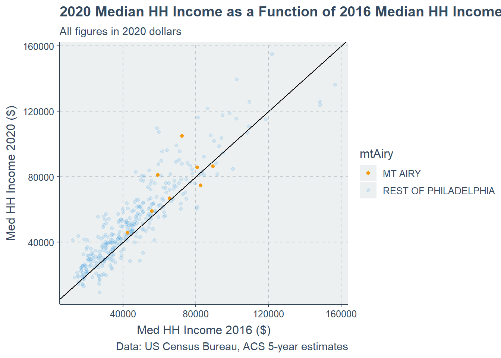

We start our analysis by loading the required packages. I’ve also defined some global settings (tigris caching and a ggplot theme). While I’m at it, I also define color and transparency lists to be used in visualizations later in the Quarto doc.
Show the code
library(tidyverse)library(tidycensus)library(sf)library(ggthemr)library(kableExtra)options(tigris_use_cache =TRUE)ggthemr('flat')crs <-"EPSG:4326"scatter_pal <-c("MT AIRY"="#f39c12","REST OF PHILADELPHIA"="#3498db")scatter_alpha <-c("MT AIRY"=1,"REST OF PHILADELPHIA"=0.15)
My Census credentials are cached in my local machine, so I don’t have to load them here. I can skip to pulling the variable lists using load_variables(). This will allow me to compare 2020 and 2016 ACS estimates for our target Census tracts.
Show the code
acs_variable_list.2020<-load_variables(2020, #year"acs5", #five year ACS estimatescache =TRUE)acs_variable_list.2016<-load_variables(2016, #year"acs5", #five year ACS estimatescache =TRUE)
Downloading Data from Tidycensus
With my setup complete, I can now move to pulling ACS data with tidycensus.
Create a vector of census variables
I start by declaring the vector of variable names that we want.
Show the code
acs_vars <-c("B01001_001E", # ACS total Pop estimate"B25002_001E", # Estimate of total housing units"B25002_003E", # Number of vacant housing units"B19013_001E", # Median HH Income ($)"B02001_002E", # People describing themselves as "white alone""B06009_006E") # Total graduate or professional degree
Call the Census API to get tract level data for 2020 for all of Philadelphia
Using the get_acs function, I can query the Census API to import the data. Below, I’ve condensed code from the original template for concision’s sake. I combine the selection, renaming, and mutating steps, and query both 2020 and 2016 data in one chunk. I select tract GEOID and NAME, and only those variables in the acs_vars list - we are only using the estimates from the ACS (suffix “E” on the variable names), we are not retaining the margin of error calculations (suffix “M” on the variable names). Although the original homework assignment sets the geometry to FALSE here, I set it to TRUE for 2016 to avoid the redundancy of reimporting and wrangling these same data later to produce the maps. (If both dataframes are sf objects, I cannot left join them, so it’s easier to left join the non-spatial 2020 dataframe to the spatial 2016 dataframe.)
Here we are going to calculate changes in inflation-adjusted median household income from 2016-2020 and the change in the percentage of people holding a graduate degree. (Notice how we multiply med_HH_Income.2016 by 1.08 to adjust it to 2020 dollars).
I’ll add four new variables to the allACS dataset: change in total population, percent population change, and change in total vacancy, and change in percent vacancy.
Below, I explore several measures of central tendency. Using base R, but without omitting NA values, the returned mean in the change of household income is NA. We can omit NA values, but this may exclude important edge cases, such as tracts that were populated in 2016 but no longer populated in 2020. Omitting these NA values gives us a mean of 6012.47 and a median of 4873.76.
Exploring distributions
Base R has a graphics package - we can look at the distribution of the data, instead of just the central tendencies (e.g. mean and median). Again, note that this omits NA values.
Show the code
hist(allACS$change_med_HH_Income)
We can also use the dynamic graphics package from the tidyverse, gglot2 to make some more detailed histograms. (Note that I’ve set the number of bins using the square root rule, rather than a binwidth 0f 5,000 as in the original document.) Here, we example the distribution of change in median household income. Some tracts have very large changes (both positive and negative) in median household income over the 5-year period that we’re examining. The most likely explanation here is that these represent tracts with relatively small populations, where a sudden influx of a handful of wealth residents (e.g., the construction of a luxury high rise) can rapidly and dramatically change the demographic profile of the tract.
Show the code
bins <-as.integer(sqrt(nrow(allACS)))ggplot(allACS)+geom_histogram(aes(change_med_HH_Income), bins = bins)+labs(title ="Change in HH median income by tract",subtitle ="Philadelphia, 2016-2020",caption ="Data: US Census Bureau, ACS 5-year estimates",x="Change in Med HH Income (2020 dollars)", y="Number of tracts")
As with the change in median household income, the change in vacancy rate is roughly normally distributed, with a handful of outliers demonstrating substantial changes in their vacancy rate
Show the code
ggplot(allACS)+geom_histogram(aes(tot_vacancy_change), bins = bins)+labs(title ="Pct. change in vacancy by tract",subtitle ="Philadelphia, 2016-2020",caption ="Data: US Census Bureau, ACS 5-year estimates",x="Change in vacancy rate (%)", y="Number of tracts")
Making a summary table
Here, I use the summarize function to create a rudimentary table of summary statistics and display it.
Let’s say you are a planner working for the City, and you are creating a neighborhood plan for a particular neighborhood. Our example neighborhood will be Mt. Airy, in Philadelphia’s Northwest section. To do this, we declare a vector of the GEOIDs of all the census tracts in Mt. Airy, then use that to create a boolean column in the allACS dataframe to represent whether or not a tract is in Mt. Airy.
We can use this column to create a new summary table that distinguishes between Mt. Airy and the rest of the city. Note that, city-wide, the mean income level per tract increased, while the median level decreased. This is likely because, while some outliers at the upper end saw substantial gains, the bulk of tracts saw decreases. On the other hand, the opposite was true in Mt. Airy, suggesting that perhaps an upper outlier tract saw a slight decrease in income levels, while the bulk of tracts in Mt. Airy saw slight increases.
Using the facet_wrap argument ggplot’s geom_histogram, I compare the distributions of income in Mt. Airy versus the rest of the city. Mt. Airy’s data are roughly normally distributed (although there aren’t enough observations to really say this), as are the city’s as a whole. However, the tract-level changes for the city as a whole are more extreme than those in Mt. Airy: the minimum and maximum changes for the city are much lower and higher respectively than those in Mt. Airy. Thus, the measures of central tendency give us an incomplete picture of how Mt. Airy compares to the city as a whole, in particular because there aren’t very many data points to go off of in Mt. Airy.
Show the code
ggplot(allACS)+geom_histogram(aes(change_med_HH_Income),binwidth =5000)+labs(title ="Change in HH median income by tract",subtitle ="Philadelphia, 2016-2020",caption ="Data: US Census Bureau, ACS 5-year estimates",x="Change in Med HH Income (2020 dollars)", y="Number of tracts")+facet_wrap(~mtAiry, scales ="free")
We can create a scatterplot to see what the relationship is between 2016 and 2020 income and where our Mt. Airy tracts fall. Using geom_abline, we can also indicate visually the line at which a tract’s income in 2020 is equal to what it was in 2016 (that is, there has been no change). Points above this line have seen an increase in average income, while points below this line have seen a decrease.
Show the code
ggplot(allACS)+geom_point(aes(x = med_HH_Income.2016*1.08, y = med_HH_Income.2020,color = mtAiry,alpha = mtAiry))+scale_color_manual(values = scatter_pal)+scale_alpha_manual(values = scatter_alpha) +geom_abline(intercept =0, slope =1, color ="black")+labs(title ="2020 Median HH Income as a Function of 2016 Median HH Income",subtitle ="All figures in 2020 dollars",caption ="Data: US Census Bureau, ACS 5-year estimates",x="Med HH Income 2016 ($)", y="Med HH Income 2020 ($)")

There are very well established correlations between socio-demographic characteristics and wealth in the US. Philadelphia is no exception. A simple scatterplot is stark evidence of this correlation. We can plot a geom_smooth trendline in here using the method = "lm" e.g. a linear fit to see. Mt. Airy tracts all fall substantially above this line, indicating that, regardless of their racial composition, their residents are, on average, wealthier than residents in racially comparable tracts. This is true both in 2016 and 2020.
Show the code
ggplot(allACS) +geom_point(aes(x =100* pctWhite.2016, y = med_HH_Income.2016,color = mtAiry,alpha = mtAiry)) +geom_smooth(aes(x =100* pctWhite.2016, y = med_HH_Income.2016), method ="lm", se =FALSE, color ="black") +scale_color_manual(values = scatter_pal) +scale_alpha_manual(values = scatter_alpha) +labs(title ="2016 Median HH Income as a Function of Pct White",subtitle ="All figures in 2016 dollars",caption ="Data: US Census Bureau, ACS 5-year estimates",x="Pct. Residents Identifying as 'White Only'", y="Med HH Income 2016 ($)")
Show the code
ggplot(allACS) +geom_point(aes(x =100* pctWhite.2020, y = med_HH_Income.2020,color = mtAiry,alpha = mtAiry)) +geom_smooth(aes(x =100* pctWhite.2020, y = med_HH_Income.2020), method ="lm", se =FALSE, color ="black") +scale_color_manual(values = scatter_pal) +scale_alpha_manual(values = scatter_alpha) +labs(title ="2020 Median HH Income as a Function of Pct White",subtitle ="All figures in 2020 dollars",caption ="Data: US Census Bureau, ACS 5-year estimates",x="Pct. Residents Identifying as 'White Only'", y="Med HH Income 2020 ($)")
Spatial Data and Tidycensus
Using the sf format of our dat, I’ll map the distribution of race across Philadelphia.
Show the code
mt_airy <- allACS %>%filter(mtAiry =="MT AIRY") %>%st_union() %>%st_as_sf()ggplot()+geom_sf(data = allACS, aes(fill = pctWhite.2020),color ="transparent")+geom_sf(data = mt_airy,color ="white",fill ="transparent")+ viridis::scale_fill_viridis(option ="viridis", guide ="colorbar") +labs(title ="Percentage of those identifying as 'white only' by tract",subtitle ="",caption ="Data: US Census Bureau, ACS 5-year estimates") +theme_void()
Assignment Content
Change in Vacant Housing Units per Tract
Scatterplot
This scatterplot suggests that, when it comes to total vacant units in 2020 as a function of total vacant units in 2016, the distribution for tracts in Mt. Airy do not differ substantially from the distribution for tracts across the city as a whole.
Show the code
ggplot(allACS)+geom_point(aes(x = total_vacant.2016, y = total_vacant.2020,color = mtAiry,alpha = mtAiry))+scale_color_manual(values = scatter_pal)+scale_alpha_manual(values = scatter_alpha) +geom_abline(intercept =0, slope =1, color ="black")+labs(title ="2020 Housing Vacancy as a Function of 2016 Housing Vacancy",caption ="Data: US Census Bureau, ACS 5-year estimates",x ="Total Vacant Units, 2016", y ="Total Vacant Units, 2020")
Map
The highest housing vacancy rates in 2016 clustered in North and West Philadelphia. Mt. Airy appears to have had a low housing vacancy rate at that time.
Show the code
ggplot()+geom_sf(data = allACS, aes(fill = vacancyPct.2016*100),color ="transparent")+geom_sf(data = mt_airy,color ="white",fill ="transparent")+ viridis::scale_fill_viridis(option ="viridis", guide ="colorbar") +labs(title ="Percentage of vacant housing units",subtitle ="per Census tract, 2016",caption ="Data: US Census Bureau, ACS 5-year estimates") +theme_void()
Table
Below is a summary table showing the average number of vacant housing units per tract for Mt. Airy vs. the rest Philadelphia as a whole in 2020. The data indicate that, on average, tracts in Mt. Airy have fewer vacant units than tracts in the rest of the city.